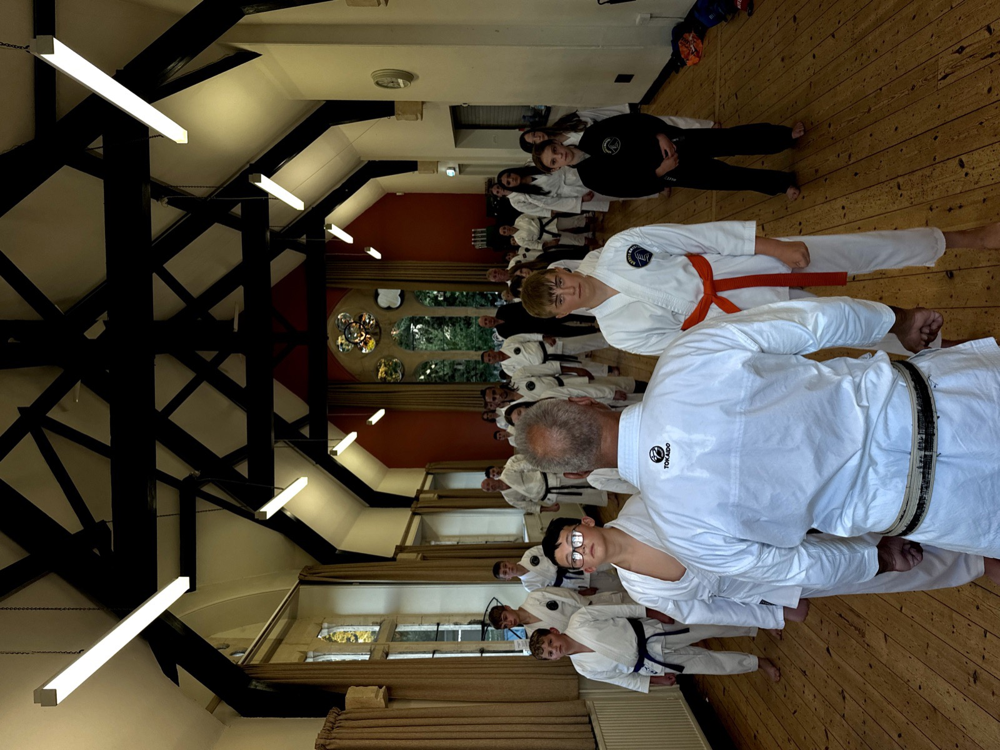

Confidence
Standing up, speaking out, trying something new in front of the class. It's confidence that carries into the classroom and the playground.
KARATOTS is the children's branch of Karate Bristol, a dedicated class for younger children, led by Sensei David and the Karate Bristol team, built around structure, encouragement and plenty of fun.

6th Dan, Renshi, with years of experience teaching children across Bristol.
Come along, no obligation, and see if KARATOTS is right for your child.
Your child's first class connects them to an established local club, not a one-off.
Standing up, speaking out, trying something new in front of the class. It's confidence that carries into the classroom and the playground.
Short, structured sessions teach children to focus, follow instructions and stick with something, even when it's hard.
Balance, coordination and stamina develop naturally through movement built for young, growing bodies.
Bowing in, listening to instructors, taking turns: the etiquette of karate teaches respect without a lecture.
Learning a new move takes concentration. Karate gives children regular practice at listening, watching and trying again.
Training alongside other children their own age, in a class built specifically for them, not squeezed into an adult session.
KARATOTS is for children aged 3 to 5. We'll happily welcome a quieter or less confident six-year-old who needs a gentler start. It's a dedicated group, not a watered-down version of an older class, run by Sensei David and the Karate Bristol team.
Sessions focus on the basics: listening, moving, following simple instructions, and building the confidence to join in. When your child is ready, KARATOTS leads naturally into Karate Bristol's class for six-to-eight-year-olds, so what starts here can grow into something much bigger.
More About KARATOTSGet in touch and tell us a bit about your child. We'll find the right session to bring them along to.
Bring your child to their first class. No kit, no experience, no pressure, just come and see how it feels.
With two free sessions to try, your child can meet the instructors, make friends, and decide if karate's for them.
KARATOTS is the youngest branch of Karate Bristol, not a separate club trading on the name. It's led by Sensei David, 6th Dan and Renshi, and the same Karate Bristol team, so your child is joining an established club from their very first session.
Not at all. KARATOTS is built for ages 3 to 5, so it's designed around complete beginners. Most children who join have never set foot in a dojo before. There's nothing to catch up on.
Yes, that's exactly what KARATOTS is for. Sessions are small, structured and led with encouragement rather than pressure, so quieter children can join in at their own pace. We'll also welcome a less confident six-year-old who'd benefit from starting here rather than the older class.
No. Fitness, balance and coordination all develop through training. Your child doesn't need to arrive fit, just willing to give it a go.
KARATOTS leads naturally into Karate Bristol's class for six-to-eight-year-olds. Because it's the same club and the same instructors, moving up is a simple next step, not a fresh start somewhere new.
Comfortable clothing they can move freely in is fine for a first session. There's no need to buy a uniform before you've tried a class.
Get in touch with KARATOTS and book your child's two free trial sessions, no obligation, no pressure.